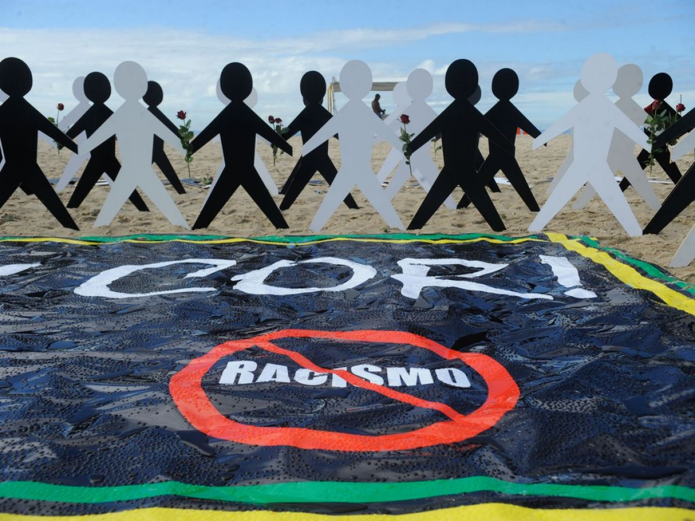
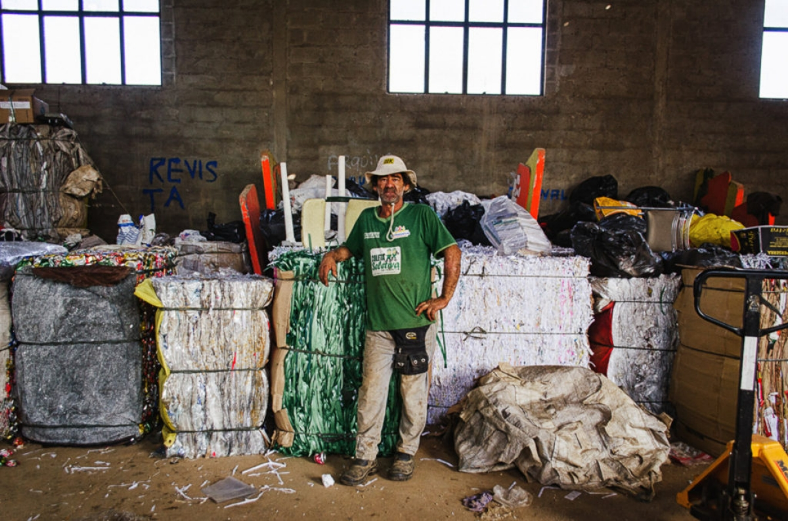

|
Projetos |
|
|
Cooperativas são atores-chave no alcance do desenvolvimento sustentável

As cooperativas são importantes agentes transformadores do ambiente socioeconômico, podendo ajudar as comunidades a atingir o desenvolvimento sustentável por adotarem valores como cooperação e solidariedade, ao mesmo tempo em que geram emprego e renda.
No Brasil, o PNUD tem três projetos com o sistema de cooperativas, sendo o primeiro deles focado em engajar e fortalecer ações para a implementação da Agenda 2030 e o alcance do desenvolvimento humano sustentável.
“A parceria sobre a Agenda 2030 foi implementada nos últimos três anos e já está em processo de conclusão. Estamos conversando sobre uma continuidade. O projeto teve como foco a análise das contribuições da OCB para os ODS, a formação de multiplicadores, cursos a distância e gestão de conhecimento”, declarou Lazareviciute.
O projeto envolve a criação de mecanismos para que as cooperativas possam avaliar seus impactos locais, orientados pelos ODS, aumentando sua visibilidade e competitividade. Em oficinas colaborativas, foram identificadas práticas de responsabilidade socioambiental a serem adotadas pelas organizações, explicou a gerente de projetos do PNUD Marcia Sumirê.
“O PNUD reconhece a importância das cooperativas, parceiras essenciais do progresso no país. As cooperativas já trazem impactos positivos para as pessoas e a economia, e um número expressivo dessas organizações está nas cidades de localização remota. O PNUD ajuda a trazer a Agenda 2030 como ferramenta de planejamento e mensuração de resultados, adicionando conhecimento técnico”, disse Sumirê.
Outra iniciativa envolve as pequenas cooperativas de mineração, em uma parceria entre OCB, Ministério de Minas e Energia, Programa das Nações Unidas para o Meio Ambiente (PNUMA) e outros atores. Em fase de estruturação, a iniciativa visa identificar formas de o setor identificar e replicar boas práticas de sustentabilidade.
“Acreditamos ser importante reconhecer tanto os desafios do setor de mineração em termos de Agenda 2030 quanto as boas práticas que estão surgindo para mostrar que a sustentabilidade é possível. A OCB é parceira-chave nesse trabalho”, ressaltou Lazareviciute.
A terceira parceria é com o Serviço Nacional de Aprendizagem do Cooperativismo no Estado da Bahia (Sescoop-BA). Trata-se de um projeto-piloto em fase final de estruturação, cujo foco é a sustentabilidade e a competitividade das cooperativas, com o fornecimento de assessoria técnica e avaliações de impacto.
Para a analista de desenvolvimento humano do Sistema OCB, Vanessa Pacheco, a colaboração com o PNUD é fundamental no sentido de fomentar o conhecimento e o desenvolvimento das cooperativas no sentido de trabalharem em prol da Agenda 2030.
“Um dos nossos principais objetivos é ajudar cooperativas a adotarem práticas e projetos de responsabilidade socioambiental. Já temos um programa nacional em todos os estados para isso. (...) É grande o movimento para mudanças sociais”, concluiu Pacheco.
Editais oferecem R$ 1,5 milhão para projetos voltados à igualdade racial

A Secretaria Nacional de Políticas de Promoção da Igualdade Racial (SNPIR/MMFDH) e o PNUD acabam de divulgar dois editais voltados ao financiamento de ações de promoção da igualdade racial. No total, há R$ 1,5 milhão para iniciativas a serem realizadas por organizações da sociedade civil e por núcleos de estudos afro-brasileiros de universidades e institutos federais em um período de 12 meses, ao longo de 2022. Interessados em participar da seleção pública devem estar atentos a datas e critérios de elegibilidade. As propostas serão aceitas até 24 de outubro.
Organizações da sociedade civil: o edital de R$ 1 milhão financiará projetos com orçamento de até R$ 142 mil nas áreas temáticas de políticas afirmativas e de políticas para povos e comunidades tradicionais. Na primeira, serão aceitas iniciativas voltadas à garantia de direitos para a população negra em situação de vulnerabilidade social e violência; ao trabalho, à renda e ao empreendedorismo; ao enfrentamento à violência doméstica e à violência política; à melhoria do acesso de jovens do ensino médio às universidades federais, entre outras.
Núcleo de Estudos Afro-brasileiros: o edital de R$ 500 mil se destina a iniciativas de ensino e pesquisa (coleta de dados e estímulo à pesquisa aplicada) que sirvam para subsidiar a formulação e implementação de políticas públicas ou ainda atividades de extensão. Os temas englobam saúde da população negra; prevenção e redução da violência contra a mulher negra; prevenção e redução da violência contra jovens negros(as); estímulo à permanência de alunos cotistas dos cursos de graduação e pós-graduação na universidade. As propostas devem ser apresentadas por meio de fundações de apoio ligadas às instituições.
|
|
|